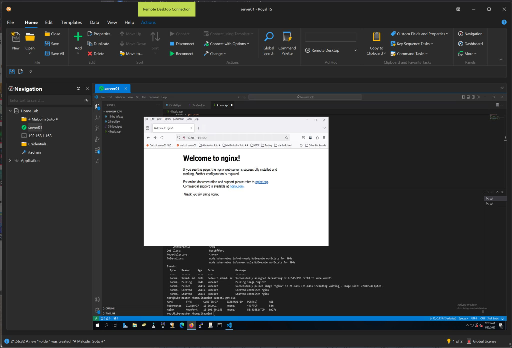

This guide walks you through how I successfully deployed Kubernetes on bare metal using Ubuntu 22.04. We'll use kubeadm for cluster setup and containerd as the container runtime.
Perfect for labs, self-hosting, and dev environments where cloud isn't required.
🔗 Reference Git Repo: github.com/malcolmso/kube-install
Install containerd, disable swap, and install Kubernetes components:
# Install containerd
sudo apt install -y containerd
sudo mkdir -p /etc/containerd
containerd config default | sudo tee /etc/containerd/config.toml
sudo sed -i 's/SystemdCgroup = false/SystemdCgroup = true/' /etc/containerd/config.toml
sudo systemctl restart containerd
# Disable swap
sudo swapoff -a
sudo sed -i '/[[:space:]]swap[[:space:]]/ s/^/#/' /etc/fstab
# Install Kubernetes packages
sudo apt-get update
sudo apt-get install -y apt-transport-https ca-certificates curl gpg socat docker.io
curl -fsSL https://pkgs.k8s.io/core:/stable:/v1.30/deb/Release.key | \
sudo gpg --dearmor -o /etc/apt/keyrings/kubernetes-apt-keyring.gpg
echo 'deb [signed-by=/etc/apt/keyrings/kubernetes-apt-keyring.gpg] \
https://pkgs.k8s.io/core:/stable:/v1.30/deb/ /' | \
sudo tee /etc/apt/sources.list.d/kubernetes.list
sudo apt-get update
sudo apt-get install -y kubelet kubeadm
# (Optional) Install kubectl
curl -LO "https://dl.k8s.io/release/$(curl -s https://dl.k8s.io/release/stable.txt)/bin/linux/amd64/kubectl"
sudo install -o root -g root -m 0755 kubectl /usr/local/bin/kubectlRun these commands on the master node:
# Enable IP forwarding
echo 1 | sudo tee /proc/sys/net/ipv4/ip_forward
sudo sed -i 's/^#*net.ipv4.ip_forward=.*/net.ipv4.ip_forward=1/' /etc/sysctl.conf
sudo sysctl -p
# Pull required images and initialize cluster
sudo kubeadm config images pull
sudo kubeadm initNote: Save the kubeadm join command shown at the end — you’ll need it for the worker nodes.
# Configure kubectl for your user
mkdir -p $HOME/.kube
sudo cp /etc/kubernetes/admin.conf $HOME/.kube/config
sudo chown $(id -u):$(id -g) $HOME/.kube/configInstall Calico to enable pod-to-pod networking across nodes:
kubectl apply -f https://docs.projectcalico.org/manifests/calico.yaml
kubectl get nodesOn each worker node, enable networking and join the cluster using the token from Step 2:
# Enable IP forwarding
echo 1 | sudo tee /proc/sys/net/ipv4/ip_forward
sudo sed -i 's/^#*net.ipv4.ip_forward=.*/net.ipv4.ip_forward=1/' /etc/sysctl.conf
sudo sysctl -p
# Join the cluster
sudo kubeadm join <control-plane-ip>:6443 --token <token> \
--discovery-token-ca-cert-hash sha256:<hash>kubectl